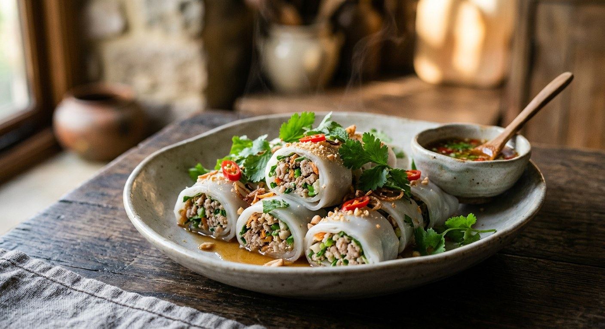

Soft fresh rice noodle sheets rolled around seasoned minced pork and a fistful of herbs, sliced into rounds and dipped in a sharp green sauce — the salad that wears a noodle wrapper.

The name does the describing: ลุย means to wade or push your way through, and สวน is the garden. A roll of kuay tiew lui suan is a mouthful of herbs — sawtooth coriander, Thai basil, mint — wrapped in a soft sheet of fresh rice noodle around a spoonful of seasoned pork. Hot Thai Kitchen's translation, "noodles venturing into the garden", is the closest English gets.
It sits in the Thai cookbook as the healthy one. Wongnai files it under clean-eating, Kapook frames it as a diet menu with six filling variations for people watching their weight, and TrueID pitches it as a business idea — easy to make, easy to sell, good margins. The formula is simple enough to be true: steam the sheets, fry the pork dry, roll with whatever the garden gives you, and let the dip do the shouting.
The dip is the engine. Every source makes the same family of sauce — a vinegar-and-sugar syrup blended with green bird's eye chillies, garlic, coriander root and herbs — and they all agree on one detail: use green chillies, because the sauce comes out a beautiful green instead of murky brown. Some versions stay sharp with lime juice, some go deeper with fish sauce, but the shape never changes: it is a bright, bracing, herb-green dip that makes plain steamed noodles and pork taste like a decision.
| Thai | English | Amount |
|---|---|---|
| เส้นก๋วยเตี๋ยวเส้นใหญ่ (ไม่หั่น) | Fresh wide rice noodle sheets, uncut | 500 g |
| หมูสับ | Minced pork | 250 g |
| เห็ดหอมแห้ง | Dried shiitake mushrooms, soaked and chopped | 4 |
| กระเทียม | Garlic, chopped | 6 cloves |
| น้ำมันรำข้าว | Rice bran oil (or vegetable oil) | 2 tbsp |
| ซอสหอยนางรม | Oyster sauce | 2 tbsp |
| ซีอิ๊วขาว | Light soy sauce | 1 tbsp |
| ซอสปรุงรส | Seasoning sauce (Golden Mountain) | 1 tbsp |
| น้ำตาลทราย | Sugar | 1 tsp |
| พริกไทยป่น | Ground white pepper | ½ tsp |
| ผักกาดหอม | Lettuce leaves | 1 head |
| แครอท | Carrot, julienned | 1 |
| ผักชีฝรั่ง | Sawtooth coriander | 1 bunch |
| ใบโหระพา | Thai basil leaves | 1 bunch |
| ใบสะระแหน่ | Mint leaves | 1 bunch |
| ผักชี | Coriander | 1 bunch |
The dipping sauce (น้ำจิ้มก๋วยเตี๋ยวลุยสวน): 4 tbsp white vinegar, 2½ tbsp sugar and ½ tsp salt dissolved together and cooled, blended with 6 cloves of garlic, 8–10 green bird's eye chillies, a small bunch of coriander with its root, and a few leaves each of Thai basil and mint — then 2 tbsp lime juice stirred in last. Wongnai's clean version: 300 g sheets, 200 g pork, carrot and shiitake, rice bran oil, no sugar beyond 2 tsp. Krua.co's shop version: 400 g fatty minced pork, 50 g soaked shiitake, สามเกลอ (garlic–pepper–coriander-root powder) in the fry, and a 500 g batch of dip that swaps fish sauce in for the salt. Aroifin's party version: adds crab sticks and moo yor (Thai pork roll) to the filling.
The dip's salt. Wongnai, TrueID and Aroifin build the sauce on a vinegar–sugar–salt syrup. Krua.co's shop batch (500 g) leaves the salt out and pours in 80 g of fish sauce instead — the same salt, plus depth. Home cooks can start with Wongnai's salt version and finish with a splash of fish sauce to taste.
The dip's sour. Wongnai and Aroifin finish with lime juice; TrueID's dip stops at vinegar, no lime. Aroifin's trick for the lime-free camp: boil the vinegar syrup first, which boils off some of the acid and leaves the sauce rounder and less throat-biting.
The herbs in the dip. Wongnai, TrueID and Aroifin blend the herbs in raw. Krua.co blanches the coriander, basil and mint for 30 seconds in salted boiling water, shocks them in iced water and squeezes them dry before blending — the dip comes out smoother, a cleaner green, and without the raw leaf edge.
The filling. Wongnai fries plain pork, shiitake and carrot with garlic. Kapook marinates the pork in soy, sugar and pepper for 30 minutes first. Krua.co fries with สามเกลอ powder (the garlic–pepper–coriander-root "three friends"). Aroifin pads the rolls with crab sticks and moo yor. None is wrong — they are the same pork filling dressed for different price points.
The wrapper. Every source uses fresh sen yai sheets — except Kapook, which explicitly allows Vietnamese rice paper (แป้งเปาะเปี๊ยะญวน) as a substitute. The texture changes from soft and noodle-like to chewy and translucent; Thais reach for the rice paper only when fresh sheets are unavailable.
This recipe is translated from the following Thai-language sources. Where they disagree, we've said so.
1. Wongnai — "วิธีทำ ก๋วยเตี๋ยวลุยสวนหมูสับ เมนูอาหารคลีน แถมสูตรน้ำจิ้มรสแซ่บ!" by Inghaha (the clean version; the dip with lime) — wongnai.com
2. Kapook Cooking — "6 สูตรก๋วยเตี๋ยวลุยสวน เมนูอาหารลดน้ำหนักเพื่อสุขภาพ พร้อมสูตรน้ำจิ้มรสแซ่บ" (the pork base recipe used here; six fillings, two dips, rice-paper fallback) — cooking.kapook.com
3. TrueID Food — "สูตร ก๋วยเตี๋ยวลุยสวน ไส้หมูสับเห็ดหอม น้ำจิ้มรสเด็ด ทำกินง่าย ทำขายกำไรดี" (แม่ซี น้องมดดี้ channel; the sellable version, steaming for safety) — food.trueid.net
4. Aroifin — "วิธีทำ ก๋วยเตี๋ยวลุยสวน ไส้หมูสับเห็ดหอม พร้อมน้ำจิ้มรสแซ่บ!" by เชฟเจิน (the crab stick and moo yor version; the boiled-vinegar tip) — aroifin.com
5. Krua.co — "ก๋วยเตี๋ยวลุยสวน" (the professional batch version: three-friends powder in the fry, fish-sauce dip, blanched herbs) — krua.co